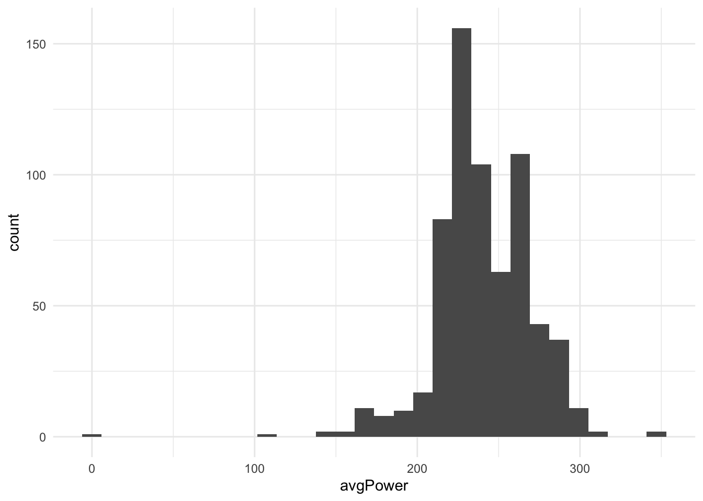
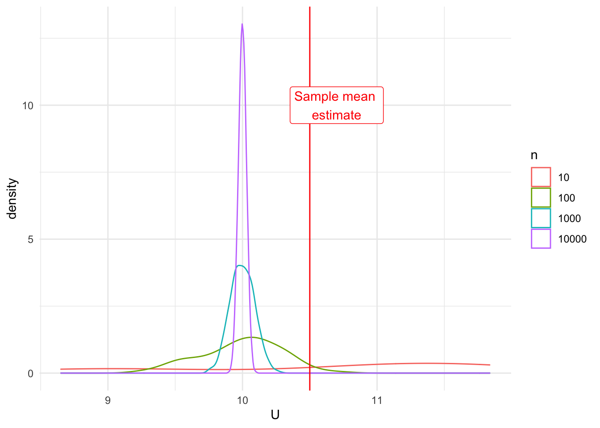
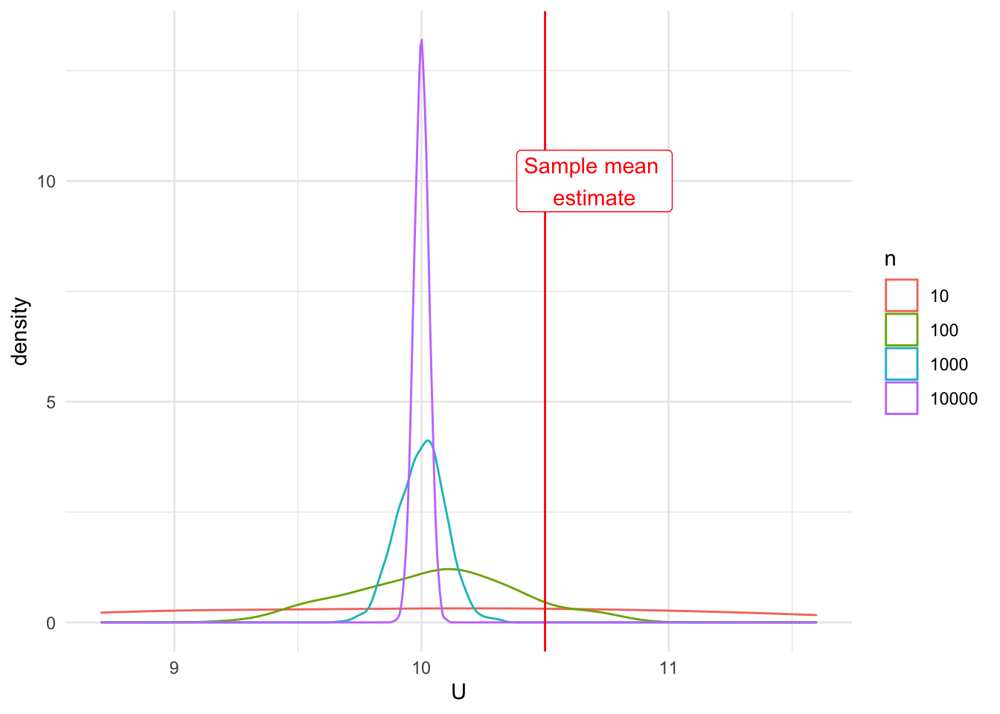
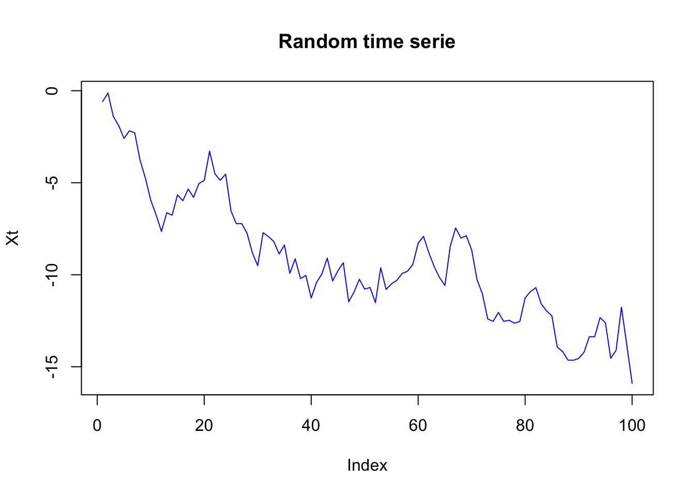

Chapter 5 Statistics
Let’s load and clean the data (which you have done during the exercises)
This session aims to give a practical guide to explore a dataset you’ve never seen before and to understand some of the key statistical concepts. You will learn to describe each variable of a dataset and assess the strength of the relationship between two variables whatever their types may be. For that, we’ll see how to visually explore a dataset and to quantify what the graphics show. We will also give an overview of what statistical inference is and what it can be used for.
This section covers the following topics :
Definitions
Descriptive statistics
Univariate statistics
Bivariate statistics
Statistical inference :
The statistical model
Main theorems to be aware of
Introduction to statistical tests
5.1 Definitions
5.1.1 Terminology
A data set can be viewed in two different manners :
A set of rows, or statistical individuals, aka observations (or instances in the galaxy of machine learning). This can be anything
A set of columns, or variables that describe the individuals
It is crucial to have a good understanding of what the statistical indvidual is, and that can be challenging !
Some examples :
## activityId uuidMsb uuidLsb name
## 1 5570974040 3695223521635878400 -7098506714510231552 En piscine
## 2 5566524321 -5212790351453402112 -8140622953684101120 Vienna Cyclisme
## 3 5561266034 1271355725617447936 -5522843681386392576 Korneuburg Cyclisme
## 4 5555881653 -2923937867469140992 -4676832321872288768 Vienna Course
## 5 5551811953 7859042982901073920 -7909531516612413440 Zwift - London
## 6 5551052200 -955408594416025216 -6866434522826685440 En piscine
## activityType userProfileId timeZoneId beginTimestamp eventTypeId rule
## 1 lap_swimming 1141258 124 1.600700e+12 9 public
## 2 cycling 1141258 124 1.600602e+12 9 public
## 3 cycling 1141258 124 1.600523e+12 9 public
## 4 running 1141258 124 1.600439e+12 9 public
## 5 virtual_ride 1141258 124 1.600362e+12 9 public
## 6 lap_swimming 1141258 124 1.600353e+12 9 public
## sportType startTimeGmt startTimeLocal duration distance elevationGain
## 1 GENERIC 1.600700e+12 1.600708e+12 60.67035 3.00000 NA
## 2 CYCLING 1.600602e+12 1.600609e+12 251.07617 122.93220 2001
## 3 CYCLING 1.600523e+12 1.600530e+12 173.04054 83.60927 745
## 4 RUNNING 1.600439e+12 1.600447e+12 89.89717 17.92890 426
## 5 GENERIC 1.600362e+12 1.600369e+12 60.44708 34.92347 160
## 6 GENERIC 1.600353e+12 1.600360e+12 55.98575 2.85000 NA
## elevationLoss avgSpeed maxSpeed avgHr maxHr calories startLongitude
## 1 NA 3.5496 4.0392 NA NA 608.8748 NA
## 2 1968 29.3760 69.5340 144 176 3906.6128 16.31524
## 3 742 28.9908 70.4052 117 161 2090.0028 16.33986
## 4 425 11.9664 44.9100 155 176 1176.6906 16.31587
## 5 0 34.6644 58.9104 138 163 737.0590 0.00000
## 6 NA 3.6396 12.6864 NA NA 598.8604 NA
## startLatitude aerobicTrainingEffect avgFractionalCadence maxFractionalCadence
## 1 NA NA 0.0000 0
## 2 48.20915 3.5 0.0000 0
## 3 48.34994 2.4 0.0000 0
## 4 48.21432 3.0 0.1875 0
## 5 0.00000 0.0 0.0000 0
## 6 NA NA 0.0000 0
## elapsedDuration movingDuration anaerobicTrainingEffect deviceId
## 1 65.93168 51.66088 NA 3968818126
## 2 269.60959 250.00298 0.0 3968818126
## 3 188.66444 172.60130 0.0 3968818126
## 4 92.30841 89.82672 0.2 3968818126
## 5 60.48333 60.18333 NA 3825981698
## 6 59.76377 47.64918 NA 3968818126
## minTemperature maxTemperature minElevation maxElevation locationName
## 1 25 26 NA NA <NA>
## 2 19 29 184.8 954.8 Vienna
## 3 18 29 139.8 322.0 Korneuburg
## 4 19 27 249.2 544.0 Vienna
## 5 NA NA 3.0 34.2 City of Westminster
## 6 26 27 NA NA <NA>
## maxVerticalSpeed lapCount endLongitude endLatitude activeSets totalSets
## 1 NA 34 NA NA NA NA
## 2 15.839978 25 16.25314 48.20399 NA NA
## 3 12.240033 17 16.38793 48.38009 NA NA
## 4 2.880066 18 16.31980 48.22264 NA NA
## 5 5.760001 1 NA NA NA NA
## 6 NA 32 NA NA NA NA
## totalReps purposeful autoCalcCalories favorite pr elevationCorrected
## 1 NA FALSE FALSE FALSE FALSE 0
## 2 NA FALSE FALSE FALSE FALSE 0
## 3 NA FALSE FALSE FALSE FALSE 0
## 4 NA FALSE FALSE FALSE FALSE 0
## 5 NA FALSE FALSE FALSE FALSE 0
## 6 NA FALSE FALSE FALSE FALSE 0
## atpActivity parent maxRunCadence steps avgVerticalOscillation
## 1 FALSE FALSE NA NA NA
## 2 FALSE FALSE NA NA NA
## 3 FALSE FALSE NA NA NA
## 4 FALSE FALSE 104 15620 NA
## 5 FALSE FALSE NA NA NA
## 6 FALSE FALSE NA NA NA
## avgGroundContactTime avgStrideLength vO2MaxValue avgVerticalRatio
## 1 NA <NA> NA NA
## 2 NA <NA> 72 NA
## 3 NA <NA> 71 NA
## 4 NA 115.638917703599 58 NA
## 5 NA <NA> NA NA
## 6 NA <NA> NA NA
## avgGroundContactBalance avgDoubleCadence maxDoubleCadence avgPower
## 1 NA NA NA NA
## 2 NA NA NA 260
## 3 NA NA NA 202
## 4 NA 172.375 208 NA
## 5 NA NA NA 212
## 6 NA NA NA NA
## avgBikeCadence maxBikeCadence strokes normPower avgLeftBalance
## 1 NA NA 1198 NA NA
## 2 83 114 17968 296.0000 49.92
## 3 82 107 12571 231.0000 49.90
## 4 NA NA NA NA NA
## 5 91 114 0 218.3049 NA
## 6 NA NA 1152 NA NA
## avgRightBalance max20MinPower trainingStressScore intensityFactor
## 1 NA NA NA NA
## 2 50.08 375.1583 291.4 0.835
## 3 50.10 242.7692 122.8 0.653
## 4 NA NA NA NA
## 5 NA 221.0525 NA NA
## 6 NA NA NA NA
## lactateThresholdBpm lactateThresholdSpeed avgStrokes activeLengths avgSwolf
## 1 NA NA 23.0 60 74
## 2 NA NA NA NA NA
## 3 NA NA NA NA NA
## 4 NA NA NA NA NA
## 5 NA NA NA NA NA
## 6 NA NA 22.6 57 72
## poolLength avgStrokeDistance avgSwimCadence maxSwimCadence maxFtp workoutId
## 1 5000 217 27 29 NA <NA>
## 2 NA NA NA NA NA <NA>
## 3 NA NA NA NA NA <NA>
## 4 NA NA NA NA NA <NA>
## 5 NA NA NA NA NA <NA>
## 6 5000 221 27 30 NA <NA>
## decoDive parentId avgVerticalSpeed maxDepth avgDepth surfaceInterval
## 1 NA <NA> NA NA NA NA
## 2 NA <NA> NA NA NA NA
## 3 NA <NA> NA NA NA NA
## 4 NA <NA> NA NA NA NA
## 5 NA <NA> NA NA NA NA
## 6 NA <NA> NA NA NA NA
## floorsDescended bottomTime start_time date is_bike is_run
## 1 NA NA 2020-09-21 17:00:51 2020-09-21 FALSE FALSE
## 2 NA NA 2020-09-20 13:37:03 2020-09-20 TRUE FALSE
## 3 NA NA 2020-09-19 15:38:41 2020-09-19 TRUE FALSE
## 4 NA NA 2020-09-18 16:28:37 2020-09-18 FALSE TRUE
## 5 NA NA 2020-09-17 18:55:06 2020-09-17 TRUE FALSE
## 6 NA NA 2020-09-17 16:33:09 2020-09-17 FALSE FALSE
## activity_recoded qual_distance qual_avgHr
## 1 Swim Short <NA>
## 2 Bike Very long High intensity
## 3 Bike Very long Low intensity
## 4 Run Long <NA>
## 5 Bike Very long Average intensity
## 6 Swim Short <NA>group_by(dat,activityType) %>%
summarise(total_dist=sum(distance,na.rm=T),avg_speed=mean(avgSpeed,na.rm=T),avg_power=mean(avgPower,na.rm = T),
.groups="keep") %>%
head()## # A tibble: 6 x 4
## # Groups: activityType [6]
## activityType total_dist avg_speed avg_power
## <chr> <dbl> <dbl> <dbl>
## 1 cross_country_skiing_ws 635. 12.6 NaN
## 2 cycling 74185. 22.8 253.
## 3 cyclocross 41.2 18.4 NaN
## 4 hiking 74.7 3.95 NaN
## 5 indoor_cardio 0 0 NaN
## 6 indoor_cycling 592. 1.55 225.group_by(dat,date) %>%
summarise(total_dist=sum(distance,na.rm=T),avg_speed=mean(avgSpeed,na.rm=T),avg_power=mean(avgPower,na.rm = T),
.groups="keep") %>%
head()## # A tibble: 6 x 4
## # Groups: date [6]
## date total_dist avg_speed avg_power
## <dttm> <dbl> <dbl> <dbl>
## 1 2008-05-27 00:00:00 9.43 21.0 NaN
## 2 2008-11-25 00:00:00 9.25 23.3 NaN
## 3 2008-11-26 00:00:00 19.9 12.7 NaN
## 4 2008-11-27 00:00:00 21.3 22.1 NaN
## 5 2008-11-28 00:00:00 10.6 13.2 NaN
## 6 2008-11-29 00:00:00 0.208 6.90 NaN5.1.2 Types of variables
The way we analyse variables depends on their type :
- Numerical variables :
- Continuous : income, revenue \(\in \mathbb{R} , \mathbb{R}^+\)
- Discrete : number of person per household \(\in \mathbb{Z} , \mathbb{N}\)
- Categorical variables :
- Ordered : small, medium, large
- Unordered : male, female
5.2 Univariate statistics
5.2.1 Numerical variables
5.2.1.1 Distribution
The distribution of a variable quantifies the number of individuals how have a certain value of the variable. We can visualize the distribution either with histograms or density plot, which are the “empirical counterparts” of the probability density function.


5.2.1.2 Descriptive statistics
We typically want to measure what the “average” value is, along with “how diverse is my population”. For that, we can use either sum-based statistics (mean, standard deviation) or quantiles. Quantile-based statistics are said to be robust because much less sensitive to outliers. But they are more computationally expensive.
stats <- c(quantile(dat$avgPower,1:3/4,na.rm = T),mean(dat$avgPower,na.rm = T))
ggplot(dat,aes(avgPower)) + geom_histogram() +
geom_vline(xintercept = stats,color="red") +
annotate(geom = "text",x=stats,y=c(50,40,50,100),label=c("Q1","Q2=median","Q3","mean"),color="red") +
geom_segment(aes(x=200,y=25,xend=300,yend=25),color="blue") +
annotate(geom="text",x=300,y=30,label="dispersion",color="blue") + theme_minimal()
5.2.1.2.1 Central tendency
Central tendency statistics allow you to have an idea of the order of magnitude of the attribute you are interested in, over the population.
## Min. 1st Qu. Median Mean 3rd Qu. Max. NA's
## 0.0 224.0 239.0 240.6 261.0 347.0 4853## 0% 10% 20% 30% 40% 50% 60% 70% 80% 90% 100%
## 0 212 221 226 230 239 246 258 265 276 3475.2.1.2.2 Dispersion
Dispersion describes how heterogenous our population is. It can be measured with various measurements (not exhaustive here)
## [1] 29.83959## [1] 37## [1] 0.1240017How to read it :
- The average deviation to the average power is 29 watts
- The age difference between the rides in the 25% “less powerful” rides and the 25% “most powerful” rides is 37 watts
- The average deviation to the average power is 12% of the average power
The latter allows to compare dispersion between variables that have different units
5.2.1.3 Dealing with various shapes
The traditional example of a distribution is the gaussian distribution
fake <- data.frame(xx=rnorm(100000,100,10))
ggplot(fake,aes(xx)) + geom_histogram() + labs(x="Random variable")+ theme_minimal()In this case, we have a very interesting property : symmetry, which makes mean and median very close. If the coefficient of variation is not too high, the tail is pretty short.
In real life,it (almost) never happens. Therefore, to understand what happens, you can check :
- How different are mean and median
- Does a log transformation make the distribution “look better”
- Is it symmetric \(\rightarrow\) skewness
- Is flat no not \(\rightarrow\) kurtosis
- Is the distribution highly concentrated (few individuals get almost the whole cake) \(\rightarrow\) concentration indexes (Gini, enthropy, Herfindahl…). You can check the package
ineq - Are there outliers (which generates a long tail) \(\rightarrow\) outlier detection (vast field…). You can start with the previous
Flat or not flat ?
data.frame(xx=rnorm(10000),yy=rnorm(10000,0,5)) %>%
pivot_longer(everything()) %>%
ggplot(aes(value,color=name)) + geom_density()+ theme_minimal()
5.2.1.4 Exercises :
What can you tell about the distance variable ?
- Draw the distribution of this variable. How much is the maximum distance of the 20% shortest activities ; the minimum distance of the 5% longest activities ?
- What unit do you think it is ? Did you check the maximum value ?
- Is there more dispersion in the distance or the average power ? using the facet_wrap function of ggplot2, compare the distributions of distance and avgPower.
- I want to group activities in 5 categories based on the distance. This operation is called discretization (very useful for choropleth maps). Search for available methods, and apply some of them. Which one is best suited to this variable ? Which one should you avoid ?
5.2.2 Categorical variables
5.2.2.1 Working with factors
Factors are an optimized way to store categorical variables (encoded in integers). The distinct categories are stored in the level attribute which you can interact with.
## [1] "cross_country_skiing_ws" "cycling"
## [3] "cyclocross" "hiking"
## [5] "indoor_cardio" "indoor_cycling"
## [7] "indoor_running" "lap_swimming"
## [9] "multi_sport" "open_water_swimming"
## [11] "other" "road_biking"
## [13] "running" "street_running"
## [15] "strength_training" "swimming"
## [17] "swimToBikeTransition" "trail_running"
## [19] "transition" "treadmill_running"
## [21] "uncategorized" "virtual_ride"
## [23] "walking"## Factor w/ 23 levels "cross_country_skiing_ws",..: 8 2 2 13 22 8 2 13 2 8 ...For more functionalities you can use the forcats package which provides convenient tools (eg to recode the variable)
5.2.2.2 Barcharts
The barchart (which IS NOT a histogram) is the most common representation for categorical variables. You can also use the pie chart (but it requires to hack a little ggplot). Pie charts are despised by the majority of statisticians but it can be adapted if the sizes really differ. Some material to make your own opinion :
ggplot(dat,aes(x="",fill=activityType)) +
geom_bar(width=1) +
coord_polar("y",start=0) +
theme_void()
5.2.2.3 Contingency tables
After visualizing, how can we measure the number of cases and the percent in each category ?
##
## cross_country_skiing_ws cycling cyclocross
## 38 2174 1
## hiking indoor_cardio indoor_cycling
## 7 32 331
## indoor_running lap_swimming multi_sport
## 13 852 52
## open_water_swimming other road_biking
## 69 22 2
## running street_running strength_training
## 1728 10 4
## swimming swimToBikeTransition trail_running
## 4 1 1
## transition treadmill_running uncategorized
## 63 4 55
## virtual_ride walking
## 49 2##
## cross_country_skiing_ws cycling cyclocross
## 0.68915488 39.42691331 0.01813565
## hiking indoor_cardio indoor_cycling
## 0.12694958 0.58034095 6.00290170
## indoor_running lap_swimming multi_sport
## 0.23576351 15.45157780 0.94305404
## open_water_swimming other road_biking
## 1.25136017 0.39898440 0.03627131
## running street_running strength_training
## 31.33841132 0.18135655 0.07254262
## swimming swimToBikeTransition trail_running
## 0.07254262 0.01813565 0.01813565
## transition treadmill_running uncategorized
## 1.14254625 0.07254262 0.99746101
## virtual_ride walking
## 0.88864708 0.03627131Another solution is to use what you’ve learned in the previous section (@ref()) : aggregation !
## # A tibble: 23 x 3
## activityType number proportion
## <chr> <int> <dbl>
## 1 cross_country_skiing_ws 38 0.00689
## 2 cycling 2174 0.394
## 3 cyclocross 1 0.000181
## 4 hiking 7 0.00127
## 5 indoor_cardio 32 0.00580
## 6 indoor_cycling 331 0.0600
## 7 indoor_running 13 0.00236
## 8 lap_swimming 852 0.155
## 9 multi_sport 52 0.00943
## 10 open_water_swimming 69 0.0125
## # … with 13 more rows5.3 Bivariate statistics
In this section, we see how to represent the relationship between two variables and measure it
5.3.1 2 continuous variables
5.3.1.1 Graphical exploration
To visualize the relationship between two numerical variables, we can use the scatter plot. Don’t forget that the log function can help you identify non linear relationships since \(log(a \cdot x^b) = log(a) + b \cdot log(x)\)
ggplot(dat,aes(distance,avgPower)) + geom_jitter() +
labs(x="Distance",y="Power",title="Raw variables") + scale_x_continuous(labels = scales::comma)+ theme_minimal()ggplot(dat,aes(distance,avgPower)) + geom_jitter() + scale_x_log10(labels = scales::comma) +
labs(x="Distance",y="Power",title="Distance in log scale") + theme_minimal()
We can pimp up the graphics a bit to visualize the correlation
ggplot(dat,aes(distance/1E5,avgPower)) + geom_jitter() + scale_x_log10(labels = scales::comma) +
labs(x="Distance",y="Power",title="Usage in log scale")+ geom_smooth(method="lm") + theme_minimal()We can see here that there is a positive relationship between distance and data usage and that this relationship has an exponential shape, meaning that the usage increases A LOT when the age drops.
5.3.1.2 Quantifying the relationship : correlations
To quantify this relationship, you can use the coefficients of correlation. There are 3 main coefficients : Pearson (the most famous and used), Kendall and Spearman. The latter can handle non-linear functional dependencies (ranks correlation) ; this is (roughly) equivalent to computing the coefficients on the log-transformed variables.
## [1] "Pearson coeff"## [1] NA## [1] "Pearson coeff, NAs removed"## [1] 0.5437859## [1] "Spearman coeff"## [1] 0.6316721## [1] "all coeffs"sapply(c("pearson","spearman","kendall"),function(xx) cor(dat$distance,dat$avgPower,method=xx,use = "complete.obs"))## pearson spearman kendall
## 0.5437859 0.6316721 0.4452121More info about correlation coefficients
Should there be a complex relationship (eg sine), the graphical exploration is mandatory !
5.3.2 2 categorical variables
For this part, I will create a discrete variable out of the distance variable (see previous exercises) to use it as second qualitative variable (the other are not really meaningful)
dat <- mutate(dat,qual_distance=as.character(cut(distance,
quantile(distance,probs = 0:5/5,na.rm=T),
include.lowest = T,
labels=c("Very short","Short",
"Average","Long","Very long"))),
qual_avgHr=as.character(cut(avgHr,quantile(avgHr,0:3/5,na.rm = T),
include.lowest = T,
labels=c("Low intensity","Average intensity",
"High intensity"))),
qual_distance=ifelse(is.na(qual_distance),"Very short",qual_distance))Try different layouts with you barcharts !
5.3.2.1 Barcharts
ggplot(dat,aes(activity_recoded,fill=qual_distance)) + geom_bar(position = "stack") + theme_minimal()ggplot(dat,aes(activity_recoded,fill=qual_distance)) + geom_bar(position = "dodge") + theme_minimal()ggplot(dat,aes(activity_recoded,fill=qual_distance)) + geom_bar(position = "fill") +
scale_y_continuous(labels = scales::percent) + theme_minimal()You get really different insights depending on the representation you chose !
5.3.2.2 Contingency tables
##
## Average Long Short Very long Very short
## Bike 530 297 186 986 558
## Other 48 39 34 43 111
## Run 523 764 311 70 88
## Swim 0 1 554 3 368##
## Average Long Short Very long Very short
## Bike 9.61189699 5.38628945 3.37323177 17.88175553 10.11969532
## Other 0.87051143 0.70729053 0.61661226 0.77983315 2.01305767
## Run 9.48494741 13.85564019 5.64018861 1.26949583 1.59593761
## Swim 0.00000000 0.01813565 10.04715270 0.05440696 6.67392093##
## Average Long Short Very long Very short
## Bike 20.7274149 11.6151740 7.2741494 38.5608135 21.8224482
## Other 17.4545455 14.1818182 12.3636364 15.6363636 40.3636364
## Run 29.7835991 43.5079727 17.7107062 3.9863326 5.0113895
## Swim 0.0000000 0.1079914 59.8272138 0.3239741 39.7408207##
## Average Long Short Very long Very short
## Bike 48.13805631 26.97547684 17.14285714 89.47368421 49.60000000
## Other 4.35967302 3.54223433 3.13364055 3.90199637 9.86666667
## Run 47.50227066 69.39146231 28.66359447 6.35208711 7.82222222
## Swim 0.00000000 0.09082652 51.05990783 0.27223230 32.711111115.3.2.3 Quantifying relationships : \(\chi^2\), Cramer’s V
The Chi-square (\(\chi^2\)) statistics is used to measure the distance between the actual distribution of cases among categories of both variables and the distribution if the variables were independant. The higher the X-squared, the higher the divergence with independance, meaning that the variables are likely linked (correlation does not apply to categorical variables). The p-value indicates whether this relationship is statistically significant or not. We will see this in more details in the last chapter (Inference).
More info and detailed way to compute the value : this website
5.3.2.4 Extreme examples :
Let’s assume we want to assess the relationship between gender and churn. Further assumption, we have 100 customers, 50 males, 50 females on the one hand, 50 churners, 50 non churners on the other hand.
- If the variables are independent, the cross table would look that way :
##
## Pearson's Chi-squared test
##
## data: .
## X-squared = 0, df = 12, p-value = 1- In the opposite situation (full dependency), the contingency table would look like that :
## Short Very long Long Average
## Swim 25 0 0 0
## Bike 0 25 0 0
## Run 0 0 25 0
## Other 0 0 0 25The \(\chi^2\) statistic measures the “distance” between reality and the first case (independence)
Note : if some cells of the contingency table have less than 5 cases, the statistic is not reliable (you’ll get a message in this case)
The chi-square suffers 2 main drawbacks : its value depends on the number of observations and the total number of categories \(\Rightarrow\) one cannot compare the \(\chi^2\) values for 2 different tables that have different numbers of underlying observations and number of categories.
To deal with that, you can use Cramer’s V, which is a (kind of) normalized \(\chi^2\). You can use the function built in the lsr package. Cramer’s V \(\in [0,1]\) and the higher it is, the more intense the link between both variables.
# install.packages("lsr") # If not installed
table(dat$activity_recoded,dat$qual_distance) %>%
lsr::cramersV()## [1] 0.4454809Let’s check with our 2 extreme examples :
## [1] 1## [1] 0In practice, it is very rare to get high values ; a rule of thumb is that a value around 0.2-0.3 is already “decent”. The \(\chi^2\) p-value (if under 0.05) shows that there is a relationship ; Cramer’s V allows to compare between two tables.
5.3.3 1 continuous, 1 categorical variable
In this part, we see how to deal with 2 variables that have different types. The goal remains the same : getting insights about the relationship between those 2 variables and quantify the strength of the link. We will try to assess if there is a connection between the distance and the discipline.
5.3.3.1 Boxplots, violin plots
Boxplots are a simple, effective and compact representation of a variable’s distribution. It relies on quantiles. Vilin plots allows to see the ful distribution of both variables
# Compute bounds of the boxplot
# bounds <- group_by(dat,activity_recoded) %>%
# summarise(q1=quantile(distance,.25,na.rm = T),
# q2=quantile(distance,.50,na.rm = T),
# q3=quantile(distance,.75,na.rm = T),
# lower_bound=q1-1.5*IQR(distance,na.rm = T),
# upper_bound=q3+1.5*IQR(distance,na.rm = T)) %>%
# pivot_longer(-activity_recoded)
ggplot(dat,aes(activity_recoded,distance/1E5)) + geom_boxplot() + theme_minimal()
# geom_point(data = bounds,aes(activity_recoded,value,color=name))
ggplot(dat,aes(activity_recoded,distance/1E5)) + geom_violin()+ theme_minimal() + scale_y_log10(label=scales::comma)It looks like bike activities are longer than the others ! Big surprise !
5.3.3.2 Quantifying relationship intensity : \(\eta^2\)
The graphics indicate that there is a relationship between activity type and distance (if not, boxplots would have the same shape for all groups). We can assess the strength of the connection with the \(\eta^2\) statistics.
Using the decomposition of the variance formula \(SS_{total} = SS_{between} + SS_{within}\), \(\eta^2\) is defined as \(\eta^2 = \dfrac{SS_{between}}{SS_{total}} \in [0,1]\)
5.3.3.3 Extreme examples :
- If the variables are independent, the boxplots should look like this (almost no difference in the distributions) :
- If they are fully “correlated”, the activity variable would explain all variance in the data set :

In this case, we see that all the variance lies between the subgroups : there is no dispersion within the groups.
Note : In practice, the previous situation will of course never happen, and a categorical variable can’t carry by itself a lot of variance (since the number of possible values are de facto limited).
This is also the \(R^2\) of the 1-factor ANOVA regression of distance explained by activty type,
## [1] "Variance decomposition"## Df Sum Sq Mean Sq F value Pr(>F)
## activity_recoded 3 610577 203526 230.6 <2e-16 ***
## Residuals 5503 4857888 883
## ---
## Signif. codes: 0 '***' 0.001 '**' 0.01 '*' 0.05 '.' 0.1 ' ' 1
## 7 observations deleted due to missingness## [1] "eta squared"## eta.sq eta.sq.part
## activity_recoded 0.1116542 0.1116542## [1] "Alternatively"##
## Call:
## lm(formula = distance ~ activity_recoded, data = dat)
##
## Residuals:
## Min 1Q Median 3Q Max
## -29.98 -17.47 -1.23 1.37 1136.08
##
## Coefficients:
## Estimate Std. Error t value Pr(>|t|)
## (Intercept) 29.9816 0.5877 51.017 < 2e-16 ***
## activity_recodedOther -11.9153 1.8950 -6.288 3.47e-10 ***
## activity_recodedRun -17.0613 0.9214 -18.517 < 2e-16 ***
## activity_recodedSwim -27.0224 1.1396 -23.712 < 2e-16 ***
## ---
## Signif. codes: 0 '***' 0.001 '**' 0.01 '*' 0.05 '.' 0.1 ' ' 1
##
## Residual standard error: 29.71 on 5503 degrees of freedom
## (7 observations deleted due to missingness)
## Multiple R-squared: 0.1117, Adjusted R-squared: 0.1112
## F-statistic: 230.6 on 3 and 5503 DF, p-value: < 2.2e-16In this case, 11.2% of the age variance is explained by the difference in activity types ; it is very high.
5.3.4 Exercises
- Explore the distribution of the average speed. What can you say about it ?
- Explore the correlation between average speed and average power
- For all the the categorical variables, get the frequent category (with table AND dplyr/tidyr)
Very important : For the next parts, we will remove the extreme observation that is clearly an error
5.4 Statistical inference
5.4.1 The statistical model
We want to measure a characteristic in the general population, let’s say the average distance of all potential activites, and let’s denote it by D.
The fundamental assumption of the statistical model is that there is an underlying data-genereting process, which means that D is distributed with a certain probability distribution. The goal of the statistician is to find which distribution it is, and estimate its parameters.
The big problem is that it is impossible to observe D on the whole population, and any dataset is only a sample of the general population (which does not really exists). The question is then : how can we estimate the parameters of the true distribution ?
\(\Rightarrow\) There is a difference between the sample mean and the population mean (noted \(\mu\)). As a matter of fact the sample mean is an estimator of the population mean. The value of an estimator (often noted \(\hat{\theta}\)) is a random variable (it depends on the sample), meaning this is not a single deterministic value, but has a probability distribution. Therefore it has an expectation and a variance An estimator is said to be biased if \(\mathbb{E}(\hat{\theta}) \neq \mu\) ; it is said to be efficient if its variance is minimal.
One fundamental hypothesis of the model is that all observations are independent and identically distributed (iid). This is typically not the case for time series, but this hypothesis is, in general, reasonable.
5.4.2 Two fundamental theorems
Eventough we cannot observe the true parameter(s), and that the sample mean is an estimator (hence a random variable), 2 theorems save the game :
5.4.2.1 The law of large numbers
\[\bar{D} = \dfrac{1}{n} \sum_{i=1}^n D_i \xrightarrow[n \to +\infty]{a.s.} \mu\]
In other words, when the sample size n is big enough, the sample mean converges to the population mean \(\rightarrow\) We can estimate this parameter with a simple mean without bias.
5.4.2.2 The central limit theorem (CLT)
Probably the most important theorem in statistics, valid whatever the true distribution is
\[\sqrt{n} \cdot \bar{D} \xrightarrow[n \to +\infty]{p} \mathcal{N} (\mu,\sigma^2)\]
Meaning that the sample mean converges in probability to a normal distribution with population parameters at “speed” \(\sqrt{n}\). This is equivalent to :
\[ \bar{D} - \mu \xrightarrow[n \to +\infty]{p} \mathcal{N} (0,\frac{\sigma^2}{n})\]
Meaning that :
- I can quantify “how far” my sample mean is from the true value
- The larger the sample size, the smaller the average deviation to the true value \(\rightarrow\) the variance of my estimator reduces when the sample size increases.

Take away :
- The sample mean is an estimator of the true value of an underlying “true” mean. The estimator’s value depends on the sample I have
- This estimator (any estimator) has a variance that I could measure if I had several samples to compute several sample means
- Probality theory gives us tools to estimate the bias and the variance of an estimator
- Bias-variance trade-off :\(\mathbb{E}((D-\bar{D})^2)=\mathbb{E}^2(D-\bar{D}) + \mathbb{V}(\bar{D})\), in other words : \(MSE_{\bar{D}} = bias^2 + \mathbb{V}(\bar{D})\) \(\rightarrow\) see you during ML course ;-)
Illustration of the biais-variance trade-off.
Let’s assume the true average of the usage is 10, what do you prefer over the following scenarios ? Let’s simulate two distributions (let’s say it is the distribution of 2 different estimators) :
- One with mean 10 and variance 4 \(\rightarrow\) unbiased
- The second with mean 10.5 and variance 1 \(\rightarrow\) biased but with low variance

In the first case, the estimator is unbiased, but with a higher variance than the second : if we go for it, we take the chance to have an estimate (depending on our sample) of eg 15 or 5, which is almost unlikely to happen with the second estimator, although this second is not centered on the true value. It is up to you to decide, but you generally can’t have both an unbiased and very precise estimator…
5.4.3 Statistical tests
5.4.3.1 Introductory example
Knowing the theoretical probability distribution of our estimator, we can assess the likelihood of an hypothesis. For the example, let’s make the hypothesis (\(\mathcal{H_0}\)) that the true mean is 10 and standard deviation is \(2\sqrt{n}\). If this hypothesis is true, thanks to the CTL, the distribution of \(\bar{D}\) would be the following :

Now, I can compute my sample mean and check its value against the hypothetical distribution :

Obviously my actual value doesn’t fit with my hypothesis : the probability of getting such a sample mean under \(\mathcal{H_O}\) is very small \(\rightarrow\) my hypothesis is very unlikely to be valid \(\rightarrow\) the true mean is probably not 10.
5.4.3.2 Student test
A test is defined by its null hypothesis \(\mathcal{H_0}\), the contrapositive (alternative) being \(\mathcal{H_1}\). The general procedure is to set \(\mathcal{H_0}\) such that we can build a test statistic of which we can derive the distribution.
In general, statisticians chose a null hypothesis such that they can build a statistic for which they know the distribution \(\rightarrow\) they can compute the probability of a specific value to occur.
For the example, we’ll focus on the Student test. The test is meant to check whether the true value of the mean is equal to a specific value. Example, I want to test whether the average distance for all activities is 20km/h. Our test is the following :
- \(\mathcal{H_0}\) : The average distance of activities is 20
- \(\mathcal{H_1}\) : The average distance of activities is not 20
The next important parameter of a test if \(\alpha\), the risk level, meaning the probability we are willing to take to be wrong while accepting \(\mathcal{H_0}\). 5% is a value that is often chosen.
Thanks to the CLT, we can build the following test statistic :
\[T = \sqrt{n} \dfrac{\bar{D}-20}{\sigma} \hookrightarrow \mathcal{N}(0,1)\]
Problem : we don’t know the value of the true standard deviation. The final test statistic is distributed with a Student distribution :
\[T = \sqrt{n} \dfrac{\bar{D}-20}{\hat{s}} \hookrightarrow \mathcal{St}_{n-1}\]
where \(\hat{s}^2 = \dfrac{1}{n-1}\sum_{i=1}^n (D-\bar{D})^2\) is the unbiased estimator of the variance.
5.4.3.2.1 Implementation in R :
##
## One Sample t-test
##
## data: dat$distance
## t = -1.3698, df = 5506, p-value = 0.1708
## alternative hypothesis: true mean is not equal to 20
## 95 percent confidence interval:
## 18.58573 20.25079
## sample estimates:
## mean of x
## 19.418265.4.3.2.2 Interpretation :
If you have one thing to remember : the p-value is the probability to be wrong while rejecting \(\mathcal{H_0}\). In our case, this probability is very small, meaning that we should not consider that the average distance of all activities is 20km/h.
In short : all you have to know is what the null hypothesis is, and make your decision depending on the p-value. In general, we reject the null is p-value < 5% (the risk level), but you can decide to be more demanding and chose a lower threshold if you don’t want to make a mistake.
Note : If you want to dig deeper, you can test whether the mean is strictly greater than a specific value using the parameter alternative of the t-test function.
5.4.3.3 Student test to compare group means
You can also use the Student test to check whether the means of two sub-populations are equal or not. In this case, the tests checks whether the difference in means differs significantly from 0. We’ll check in this example if average distance differs between rides and other activities. For that we have to extract on the one hand the bike activities’ distance and the other activites’ distance on the other hand. We can run the test on those 2 vectors :
bike <- filter(dat,is_bike) %>% pull(distance)
non_bike <- filter(dat,!is_bike) %>% pull(distance)
t.test(bike,non_bike)##
## Welch Two Sample t-test
##
## data: bike and non_bike
## t = 23.825, df = 4586.7, p-value < 2.2e-16
## alternative hypothesis: true difference in means is not equal to 0
## 95 percent confidence interval:
## 18.09061 21.33476
## sample estimates:
## mean of x mean of y
## 29.98157 10.26888In this case, the null hypothesis is “the difference in means is 0” and the p-value is very very small (almost 0) \(\rightarrow\) we can reject the null without second thoughts, which means there is a significant difference between the 2 sub-groups regarding average distance.
5.4.3.4 Back to our \(\chi^2\)
Remember the \(\chi^2\) test is used to assess if 2 categorical variables are independent or not. The null hypothesis in this test is “both variable are independant”. To check that, a test statistic, \(D^2\) (X-squared in R output) is built, and under \(\mathcal{H_0}\), it is distributed with a \(\chi^2\) probability distribution. We can can then test the validity of the null depending on the test value.
Let’s check if there is a relationship between activity and distance in bins :
##
## Bike Other Run Swim
## Average 530 48 523 0
## Long 297 39 764 1
## Short 186 34 311 554
## Very long 986 43 70 3
## Very short 558 111 88 368##
## Pearson's Chi-squared test
##
## data: .
## X-squared = 3282.8, df = 12, p-value < 2.2e-16In this case, the p-value is again much smaller than 5% \(\Rightarrow\) the probability to be wrong by rejecting the null is again very small… It is hence reasonable to reject the null and we can consider that the two variables are independent, meaning there is a connection between the activity type and the distance.
5.4.4 Other estimators : maximum of likelihood
We saw that the sample mean is a good estimator for the population mean. If you assume that the underlying probability distribution of the variable of interest is something else than a normal distribution, you can be interested in estimating another parameter than the mean.
Let’s say we want to estimate the \(s\) parameter of the Zipf’s law.
In this case, you can use the maximum likelihood estimator (MLE). The likelihood is the joint probability of observing the sample I got (which is the product of individual probabilities under the iid hypothesis).
\[L_X(s) = \prod_{i=1}^n f(k;s,N)\]
Since we state that the underlying probability distribution is Zipf’s law, we can express the likelihood as a function of the \(s\) parameter. The idea of the MLE is since this sample happened, it was the most likely to happen, hence the value of \(s\) is such that it maximizes the likelihood for my sample. And finding the maximum value is something for which we have a few algorithms !
For this estimator, we also know some asymptotic properties that allows to build tests, which you can interpret in the same manner. Namely, you have three tests :
- Wald test
- Likelihood ratio test
- LM test (Lagrange multiplier)

All those test statistics are distributed as a \(\chi^2\) distribution
MLE is also used for machine learning/econometrics, especially when relationships are non linear \(\Rightarrow\) logistic regression.
Notes :
- Sample mean is the MLE for the exponential family (eg gaussian distribution)
- MLE is a subset of M-estimators
5.4.5 Exercises : interprete a test you don’t know
- Run a Kolmogorov–Smirnov test on the distance variable, and the logarithm of this variable. What can you conclude ?
- In time series analysis, it is crucial to check if a time series is stationary or not. Stationarity means that both mean and variance are constant over time (no drift). If it’s the case, it’s easier to model it. To check that, there are several tests called “unit-root” tests (if there is a unit root, the serie is not stationary). In this example, I simulate a time series and run the Phillips-Perron test. The alternative hypothesis is specified in the output ; please interpret the result.
library(tseries)
# generation of a random walk
Xt <- cumsum(rnorm(100))
plot(Xt,type="l",main="Random time serie",col="blue")
##
## Phillips-Perron Unit Root Test
##
## data: Xt
## Dickey-Fuller Z(alpha) = -9.9662, Truncation lag parameter = 3, p-value
## = 0.5376
## alternative hypothesis: stationary